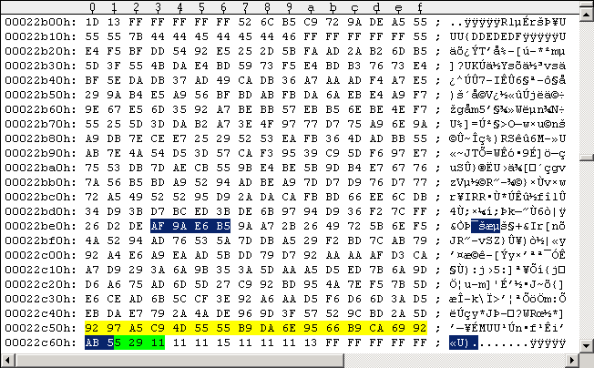
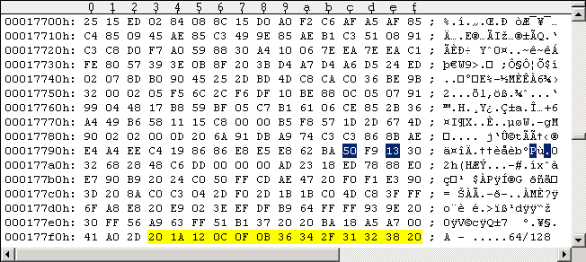

Main Index Routine Index Memory IndexChanging the TV standard: PAL <-> NTSC
RapidLok disks come around with predefined TV standard, you can't run them on a C64 with a different TV standard. I show you here how you can simply switch between the TV standards if you have a "wrong" disk. But please don't edit your original disks - change the TV standard only on remastered disks or in your G64 images! There is no problem for WinVice - you can set the correct TV standard in WinVice (Options - Video standard)! Notice: A game may have further PAL/NTSC checks inside its game code or none at all, thus relying on the TV standard "enforced" by RapidLok. They may not work with the "wrong" hardware or may have some sort of screen flicker! We make only sure here that RapidLok works with the chosen TV standard. In the case of Microprose Pirates we already know from my other tutorial "Microprose Pirates 1987 C64 - Getting a clean image" that the game itself works for both PAL and NTSC. There is only one difference between PAL and NTSC versions of RapidLok6. It's the timing of the 2-bit fastloader in the $0200 transfer routine of the C64 client, see following code snippet: --- $0200 file transfer routine snippet (C64 client) ------------- 0224 8E 00 DD STX $DD00 0227 8E 40 02 STX $0240 PAL: 022A EA NOP PAL: 022B EA NOP NTSC: 022A 06 C3 ASL $C3 022C 8A TXA 022D 0D 00 DD ORA $DD00 0230 4A LSR A 0231 4A LSR A 0232 0D 00 DD ORA $DD00 0235 4A LSR A 0236 4A LSR A 0237 0D 00 DD ORA $DD00 023A 4A LSR A 023B 4A LSR A 023C 4D 00 DD EOR $DD00 023F 49 03 EOR #$03 0241 91 AE STA ($AE),Y ------------------------------------------------------------------ The $0200 routine gets loaded and decrypted into C64-memory by the initial $02ED startup routine, see following code snippet: --- $02ED code snippet (C64 client) ----------------------- C:02ED 84 08 STY $08 ; C64 client entry point . . C:030D A0 59 LDY #$59 C:030F 88 DEY C:0310 30 A4 BMI $02B6 C:0312 10 06 BPL $031A . . C:031A 20 A5 FF JSR $FFA5 ; Handshake Serial Byte In C:031D 91 AE STA ($AE),Y C:031F 20 A5 FF JSR $FFA5 ; Handshake Serial Byte In C:0322 51 AE EOR ($AE),Y C:0324 91 08 STA ($08),Y C:0326 50 E7 BVC $030F ----------------------------------------------------------- As mentioned in my first tutorial "Microprose Pirates 1987 C64 - Getting a clean image" the above routine continues loading Track 18 Sector 18: It always reads 2 bytes at a time ($031A-JSR, $031F-JSR), the second gets xor'ed with the first ($0322-EOR). Set a conditional breakpointbreak C:31d if C:.Y == 2bto $031D, and you will see how the $022A/$022B bytes are read, decrypted and stored to memory. The following two tables show which bytes are read and how they are decrypted in the PAL and NTSC versions: --- PAL DECRYPTION ----------------- 022A = |13 50| xor |F9 BA| = |EA EA| ------------------------------------ --- NTSC DECRYPTION ---------------- 022A = |FF 79| xor |F9 BA| = |06 C3| ------------------------------------ Now load Track 18 Sector 18 into Maverick v5.04 GCR Editor and apply the modifications (it is explained in my old original patches here how to use this tool). Don't forget the sector parity. Then apply the changes in the GCR code to both Pirates G64 images (disk sides 1+2) using UltraEdit. The following Figure #1 shows Track 18 Sector 18 of my Pirates PAL disk side 1 and Figure #2 that of the NTSC version. Notice 1: The green marked bytes are GCR-encoded off-bytes at the end of every DOS sector - they may be different on your disk (no problem - they are unused): a standard DOS data sector consists of 1 byte block ID ($07), 256 data bytes and 1 byte checksum, making 258*5/4=322.5 encoded data bytes on disk after the Sync mark; adding the usual 2 off-bytes due to GCR alignment (usually zeros) make 260*5/4=325, hence (325-322.5)=2.5 green marked bytes. Remember the factor 5/4 comes from the GCR encoding on disk: 4 memory bytes are converted to 5 GCR bytes on disk (the "GCR alignment"). The following bytes before the next Sync mark are (random) off-bytes as well. Notice 2: The yellow marked bytes are known to be possibly different on RapidLok6 disks, they're some sort of unused off-bytes. There are up to 13 bytes different in D64 images: the yellow marked last 13 of the 256 data bytes in the sector (see Figures #3 and #4 below). This corresponds to (257-13)*5/4=305 "identical" data bytes in the associated G64 images, counted from the beginning of the sector (ok, the marked PAL/NTSC bytes in the middle are different); directly following in the G64 images are the yellow marked 13*5/4=16,25 different bytes (2 bits overlapping to marked checksum). The 2 overlapping bits from the 257 GCR encoded data bytes may lead to a different first byte in the blue marked sector checksum in Figures #1 and #2 below (the "A" at offset $22C60 there), which is no problem - simply apply the blue marked changes. Important: If your yellow marked bytes are different in your own disk images, you must use the ones in the figures! If you encounter more differences, don't apply this TV standard fix - or fix the sector parity yourself! Changing the TV standard:
The following Figure #1 shows a PAL G64 disk image and Figure #2 shows a NTSC G64 disk image. You have to change the blue marked bytes. If the yellow marked bytes are different in your own disk images, you must use the ones in the figures! The green marked bytes are unused.
Figure #1: Track 18 Sector 18 of Pirates disk side 1 (PAL), G64 image.
Figure #2: Track 18 Sector 18 of Pirates disk side 1 (NTSC), G64 image.The following Figures #3 and #4 show how the changes are applied to D64 images. You should not need this, but I show it here how this is done:

Figure #3: Track 18 Sector 18 of Pirates disk side 1 (PAL), D64 image.
Figure #4: Track 18 Sector 18 of Pirates disk side 1 (NTSC), D64 image.